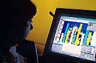

През последните десет години употребата на дисплей във всички клонове на промишлеността и търговията нараства бързо и постоянно. Установено е, че повече от половината работна сила в промишлено развитите страни използва редовно дисплей. Този растеж се съпровожда от нарастваща загриженост за един комплекс от проблеми за здравето и безопасността на хората работещи с дисплей.
Работата с дисплей може да предизвика един широк кръг от различни физически и физиологически проблеми за тези, които работят с тях. Някои от симптомите са сравнително незначителни и изчезват, когато се премахне източникът на проблема, но в комбинация с други фактори могат да причинят продължително увреждане на здравето, особено при продължителна работа. Други симптоми са по-сериозни и могат да създадат опасност от сериозно увреждане на здравето или да задълбочат проблеми, които вече съществуват.
Не всички тези проблеми се дължат на ефекта от работата с дисплей. Много от тях произтичат от резултат или на лоша работна среда или на лоша организация на работното място и могат да се открият и там, където се работи с дисплей. Настоящето развитие на научните изследвания по много от проблемите, които се наблюдават при операторите работещи с дисплей не дава възможност за направата на категорични изводи както за ролята на дисплеите, така и за точните предпазни мерки, които трябва да се вземат. Това на първо място означава, че трябва да се продължат подробни изследвания по възникналите проблеми и че стандартите за безопасност и опазване на здравето на работещите с дисплей трябва много сериозно да наблегнат на предохранителната страна, там където има и най-малки съмнения относно възможни опасности.
| ОСНОВНИ ПРИНЦИПИ ЗА КОНФИГУРАЦИЯ НА РАБОТНОТО МЯСТО |
|---|
|